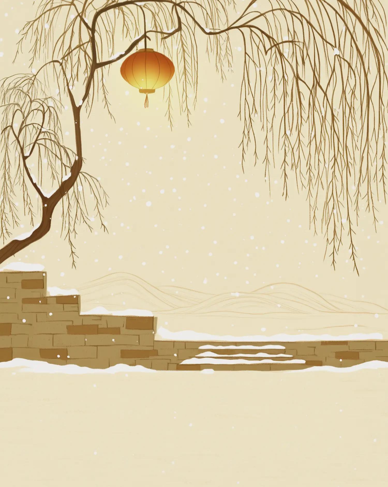

一段来由 · 一点日常
小雪将至，把日子过暖
“小雪”说的是节令里的寒意渐深，并不意味着每个地方都会下雪。窗边添一件衣，桌上留一盏暖茶，冬天就有了亲切的样子。
读懂这个节令
小雪是二十四节气之一，接续立冬，标志着天气进一步转冷。南北各地的气候不同，习俗也各有来处。
冬日里的家常习俗
有些地方会在此时腌菜、晒鱼干、做糍粑，为冬日储备风味。选择熟悉的一样，和家人聊一聊它的来历。
给今天留一个小仪式
整理一处冬衣收纳；为家人添一杯热饮；在傍晚散步时，留意树影与风声的变化。

一段来由 · 一点日常
“小雪”说的是节令里的寒意渐深，并不意味着每个地方都会下雪。窗边添一件衣，桌上留一盏暖茶，冬天就有了亲切的样子。
小雪是二十四节气之一，接续立冬，标志着天气进一步转冷。南北各地的气候不同，习俗也各有来处。
有些地方会在此时腌菜、晒鱼干、做糍粑，为冬日储备风味。选择熟悉的一样，和家人聊一聊它的来历。
整理一处冬衣收纳；为家人添一杯热饮；在傍晚散步时，留意树影与风声的变化。